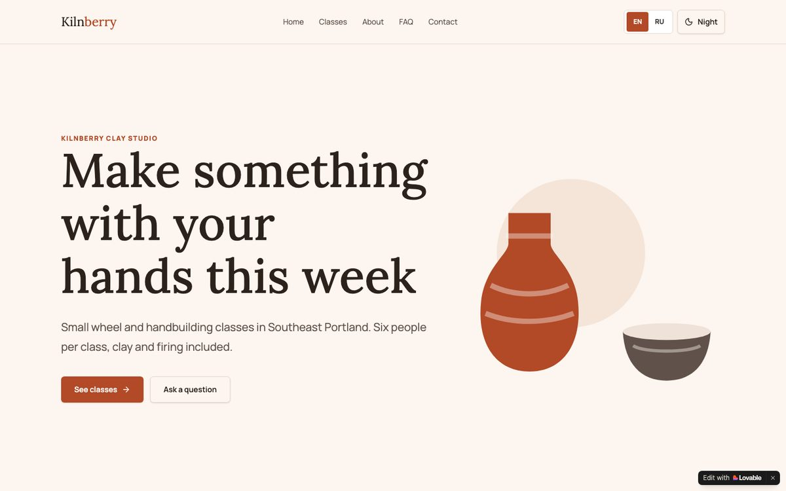
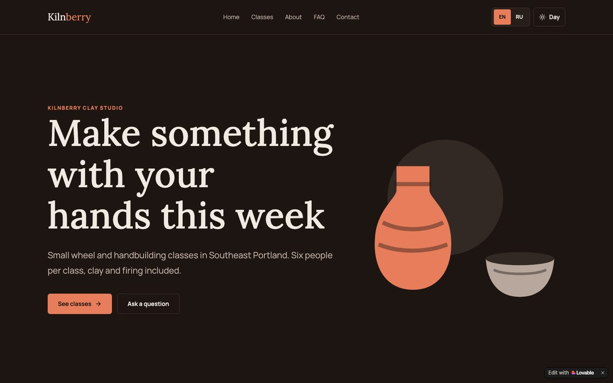
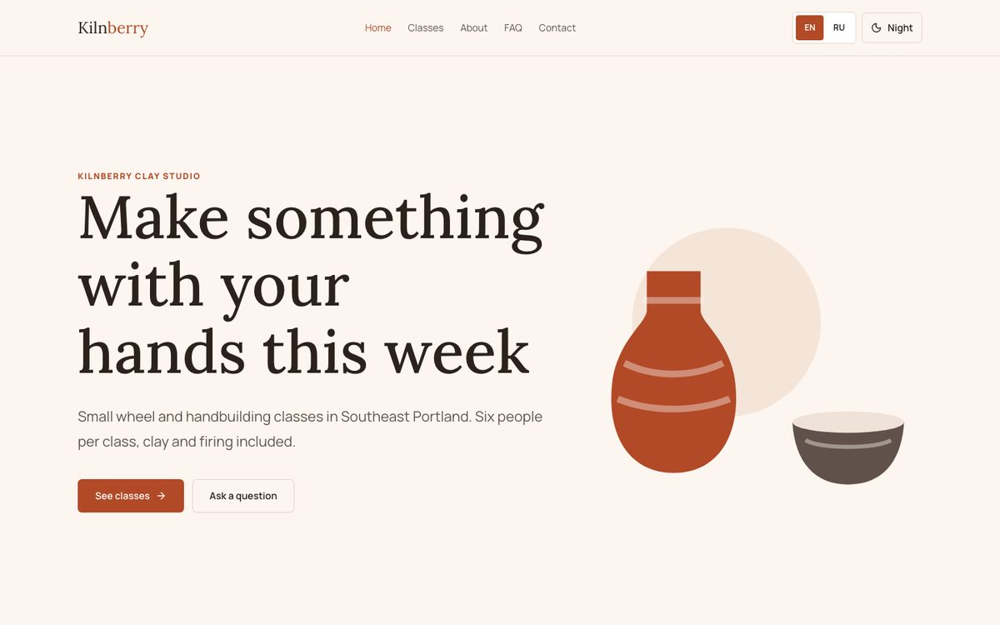
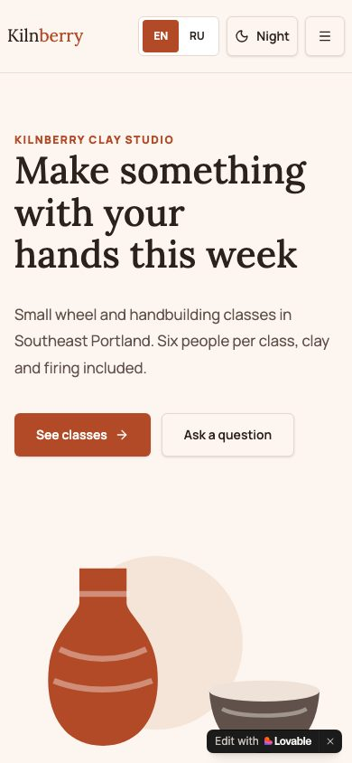
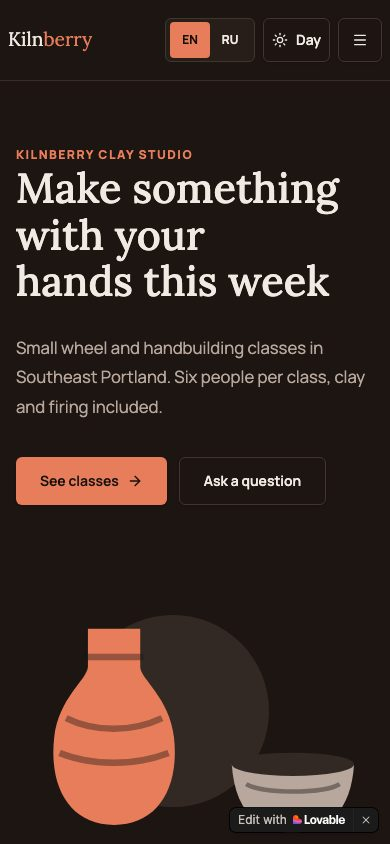
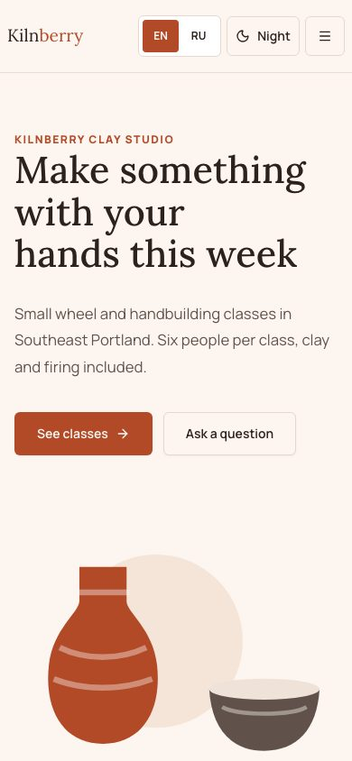
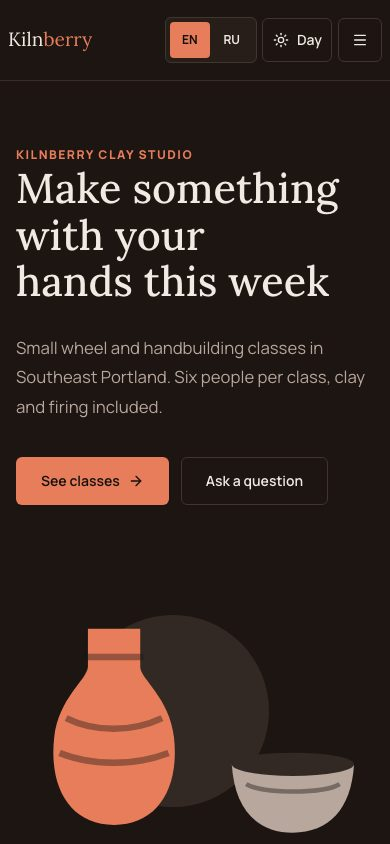

Demo · Lovable to WordPress
The same site, moved from Lovable to WordPress
We built a five-page site for a fictional pottery studio in Lovable, then rebuilt it as a WordPress theme. Same design, pages made of editor blocks, English and Russian, day and night theme. The owner changes text in the editor, no code.
Runs in your browser, opens in 10–30 seconds
Kilnberry Clay Studio is a fictional business made for this demo. The live WordPress is a sandbox in your browser: you are signed in as the admin, changes reset when you close the tab, and email is not sent.
Before and after
The home page, first screen. The page theme switch above changes these images too.







Editing text without code
A 36-second screen recording in the live WordPress: open the page in the editor, change the heading, save, and the site shows the new text.
What was moved
- Pages and phone layout
5 pages in 2 languages, rebuilt to match the design at computer and phone width.
- Text, menus and the form
Every text word for word, one menu per language, the contact form with the same fields and error messages.
- Titles and descriptions
The browser title and search description of every page, carried over unchanged.
- Redirects from old addresses
Old Lovable links with ?lang=ru now open the same page in Russian at its new address.
- Editing by the owner
Pages are made of standard WordPress blocks. Classes and prices are edited in their own list.
- A test copy before going live
The live WordPress above is that test copy: the same theme and content, before any real hosting.
Titles and addresses
| Page | Address before (Lovable) | Address after (WordPress) | Title, unchanged |
|---|---|---|---|
| Home | / | / | Kilnberry Clay Studio | Pottery classes in Portland |
| Classes | /classes | /classes/ | Classes and prices | Kilnberry |
| About | /about | /about/ | About the studio | Kilnberry |
| FAQ | /faq | /faq/ | Questions and answers | Kilnberry |
| Contact | /contact | /contact/ | Contact | Kilnberry |
Redirects
Lovable kept one address per page and switched the language with ?lang=ru. WordPress gives Russian pages their own addresses, so old links are redirected:
| Old link | Opens now |
|---|---|
/?lang=ru | /ru/ |
/classes?lang=ru | /ru/zanyatiya/ |
/about?lang=ru | /ru/o-studii/ |
/faq?lang=ru | /ru/voprosy/ |
/contact?lang=ru | /ru/kontakty/ |
/classes?lang=en | /classes/ |
How it was checked
- 41 page views compared with the Lovable site: 5 pages × 2 languages × day and night × computer and phone, plus the 404 page. Text, titles and descriptions match word for word, apart from the differences listed below.
- 174 blocks on 10 pages open in the WordPress editor without a single block error.
- The form was sent in English and in Russian: both messages are in the admin under Messages. Empty fields show the error next to the field.
- 6 old links checked, from the table above: each opens the right page in the right language.
- No horizontal scrolling at 390 px, no errors in the browser console (the 404 page reports its own 404 code, as it should).
What is different on purpose
- On Lovable the form only said thank you. In WordPress every message is saved in the admin and sent by email.
- A skip-to-content link for keyboard users and a hidden anti-spam field in the form.
- The 404 page has its own title: Page not found.
Have a site in Lovable, Bolt or v0?
We move it to WordPress with the same design and set it up so you can edit it yourself.